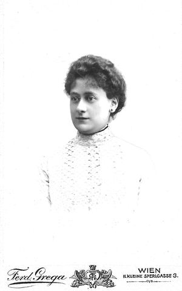
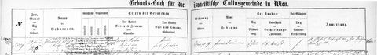
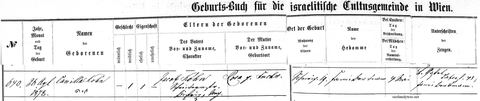
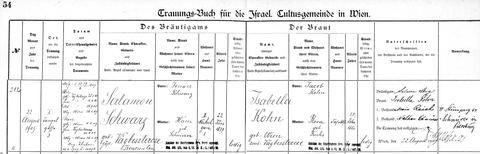
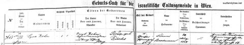

Jakob Kohn
1840–1904
Life events
| Born | |
|---|---|
| Lived | 1848 · Považská Bystrica, Trenciansky, Slovakia Map |
| Married | 6 Jul 1873 · Rosi Fuchs · Leopoldstädter Tempel, 1020 Tempelgasse 5, Vienna, Austria Map |
| Lived | |
| Lived | 7 Dec 1884 · 1020 Nickelgasse 1, Vienna, Austria Map · A witness on great nephew, Philipp Schwarz' birth record. |
| Lived | 13 Jan 1888 · 1020 Nickelgasse 1, Vienna, Austria Map · A witness on great nephew, Richard Blau's birth record. |
| Married | 7 Aug 1888 · Námestovo, Zilinsky, Slovakia Map |
| Died | |
| Buried | 13 Jan 1904 · Zentralfriedhof Tor I, 1110 Simmeringer Hauptstrasse 230b, Vienna, Austria Map · Group 7 Row 5 Grave 079 |
Family
Jakob Kohn1840–1904

Rosi Fuchs1848–1887
Children

Berta Kohn1874–1942
Heinrich Lajos 'Louis' Kohn Kende1876–1933
Camilla Kohn1878–1942
Isabella 'Bella' Kohn1880–1942
Egine Kohnb. 1882 Siegfried Kohn1883–1889
Siegfried Kohn1883–1889 Eugenie 'Jenny' Kohn1885–1942
Eugenie 'Jenny' Kohn1885–1942
Photos
Jakob Kohn
Rosi Fuchs
Jakob Kohn

Heinrich Blau
Jakob Kohn

Jakob Fuchs
Moses Moritz Schwarz
Philipp Schwarz
Jakob Kohn
Jakob Kohn

Richard Blau
Jakob Kohn
Jakob Kohn